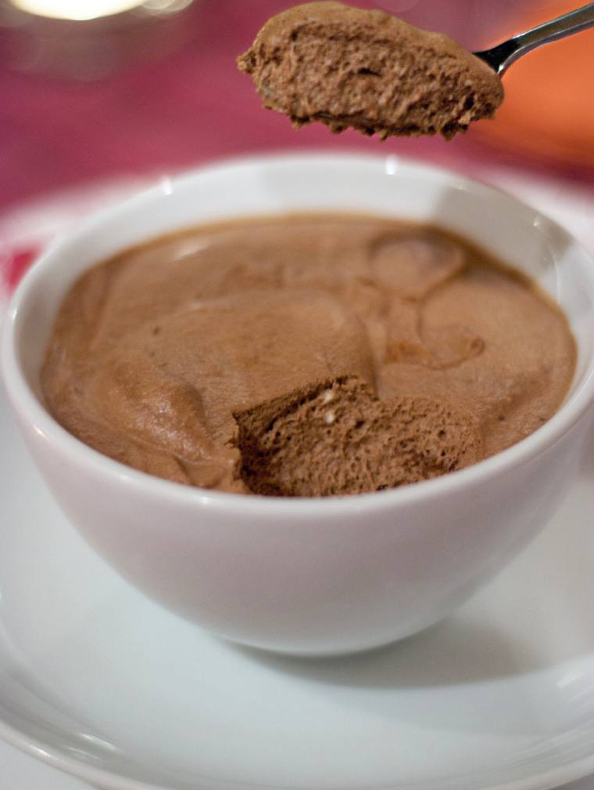

Desserts

Desserts
Mousse au chocolat
Préparation : 20 min
Repos : 4 h
Cuisson : 5 min
Ingrédients (pour 4 personnes)
- 150 g de chocolat noir à 70 %
- 75 g de crème entière liquide
- 30 g de jaunes d’œufs (2 environ)
- 100 g de blancs d’œufs (3 environ)
- 30 g de sucre
Quantités adaptées. Les temps de cuisson ne sont pas recalculés.
- Faire fondre le chocolat, chauffer la crème et la verser dessus en trois fois, en mélangeant.
- Ajouter les jaunes, la préparation doit être lisse et à 40 ou 45 °C.
- Monter les blancs avec le sucre, souples, en bec d’oiseau.
- En incorporer un quart vivement, puis le reste délicatement.
- Répartir en verrines et réfrigérer au moins 4 heures.
À conserver au froid, jamais au placard
Au réfrigérateur entre 0 et 4 °C : 24 heures au plus. Ne pas congeler. Œuf cru : jamais pour les jeunes enfants, femmes enceintes, personnes âgées ou fragiles, sauf avec de l’œuf pasteurisé.
D’après une recette de l’École Gourmet Valrhona. Texte reformulé, conservation ajoutée.